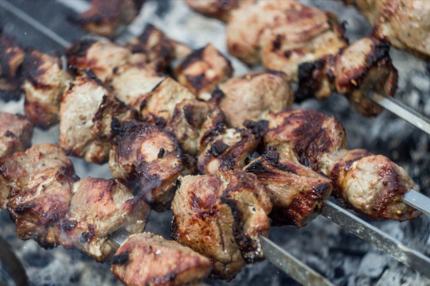
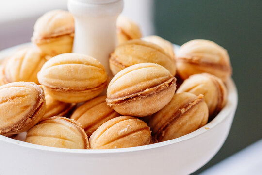

Die russische Küche zeichnet sich besonders durch herzhafte und deftige Gerichte aus. Beliebte Speisen sind zum Beispiel diverse Teigtaschen, leckere Suppen und gute Salate. Auch süße Leckereien werden oft als Nachspeise angeboten. Unten finden Sie die Rezepte für eine leckere Sommersuppe, ein herzhaftes Fleischgericht und eine köstliche Nachspeise.

Okroschka

Schaschlik

Oreschki